Open Web Fellows Report

The open Internet is in danger.
Around the globe, the Internet’s defining characteristics — openness, freedom, potential for innovation — are under threat.
How? Monopolies are growing in influence, with a handful of tech giants acting as gatekeepers to access and information. Walled gardens are increasingly shepherding users to corners of the Web where content is tightly controlled and carefully curated. Mass surveillance by governments and profit-motivated companies is becoming routine. And ill-advised Internet legislation is emerging on several continents, endangering net neutrality.
As these threats proliferate, the open Internet’s potency and vibrancy diminish. Free expression online suffers. Democratic discourse becomes rare. The Internet’s egalitarian nature wilts. And breakthroughs in the fields of science, health, and other sectors become less common.
To address these threats and protect the Internet as an open, public resource, we need a new breed of advocate: individuals with a technologist’s savvy and an activist’s zeal. We need advocates who can stand up for critical issues like privacy, inclusion, and literacy online. We need advocates who can build tools, communities, and public awareness about digital freedom.
In 2015, Ford Foundation and Mozilla launched the Open Web Fellows program to foster just this type of advocate. We set out to build an international leadership initiative that embeds bright and passionate technology talent at leading NGOs and civil society organizations, with one goal: protecting the open Internet.
“We need to make sure that the rights we have fought so hard to achieve are upheld and strengthened in the digital space. And we need to make sure that the people who are working to challenge inequality have the tools and infrastructure they need to do it well.”
Publication Aim
The Ford-Mozilla Open Web Fellows program provides a leadership pipeline for individuals eager to defend the health of the open Internet. This report is a documentation of and reflection on that undertaking. It serves as a record of the program’s genesis and first year, articulating impact and accomplishments.
This report also chronicles lessons learned, and how they can be applied to future Open Web Fellow cohorts.
Data in this report was gathered through candid interviews with Fellows and host organizations; reflections from Mozilla leadership steering the program; and analysis of application data.
For questions relating to this report, contact Open Web Fellows Program Manager Vanessa Rhinesmith at vanessa@mozillafoundation.org.
Program Genesis

Two Nonprofits, One Vision
The Ford-Mozilla Open Web Fellows program may at first seem a collaboration between two disparate nonprofits. The Ford Foundation is a social justice organization devoted to global equality; Mozilla is a technology and advocacy organization that first made its mark with Firefox, the open source Internet browser. The Ford Foundation measures its history in decades; at Mozilla, the Browser Wars of the late 1990s are considered ancient history.
But we’re motivated by the same principles. The Ford Foundation mission affirms the inherent dignity of all people, and laments that too many individuals are excluded from the political, economic, and social institutions that shape their lives. The Mozilla Manifesto asserts the Internet must enrich the lives of individual human beings, and that magnifying the public benefit aspects of the Internet is an important goal, worthy of time, attention, and commitment.
At the core of these philosophies is a shared idea: When open and accessible to all, the Internet has the potential to be the greatest global resource in the history of the world. If the Internet is decentralized and distributed, everyone has an equal opportunity to read, write, participate on, and shape the Web. Innovation and enlightenment become a matter of course.
“The Internet is the platform on which justice will be fought for and won in this century.”
Both organizations also believe that the Internet requires a fierce defense. In the Internet’s short life span so far, we’ve already witnessed attempts to centralize control, weaken freedom, and stifle innovation online. Often, these threats to the Internet are veiled threats to civil rights.
“We need to build a culture and community that can confront these challenges together.”
Both Ford Foundation and Mozilla are also members of the NetGain partnership, a diverse group of nonprofits united by the belief that the open Internet must be built, used, and governed in ways that create opportunity for all.
The involvement of many marquee-name philanthropies in NetGain reaffirms Ford and Mozilla’s commitment to the open Internet, and remains a major motivation for the Open Web Fellows program.
Identifying the Battlefields
The Open Web Fellows program came together at an auspicious time. In 2014 and 2015, threats to the open Internet were growing. Data retention practices and privacy oversteps were — and continue to — erode trust online. The concept of fast lanes and slow lanes began to undermine net neutrality. And walled gardens began to propagate, often masquerading as zero-rating schemes for the poor.
At that same time, a string of bright spots and wins showcased what thoughtful, dedicated open Internet advocacy can achieve. In February of 2015, a broad coalition of technology companies, advocacy organizations, and everyday Internet users upheld net neutrality in the U.S., flooding the FCC with millions of comments in the days prior to the landmark decision. And an equally diverse coalition helped reform mass surveillance in June of 2015 by pushing for passage of the USA FREEDOM Act.
Many of these sagas linked back to a central issue: a conspicuous lack of Internet savvy among policymakers, both within the U.S. federal government and elsewhere around the world. Too often, lawmakers view technology as an afterthought. But in fact, many of today’s biggest issues — from civil rights to education to social justice — must be viewed and approached through a technology lens.
“We live in the Internet age, which is transforming every aspect of society. And yet, many of the people who write and enforce policy still don’t understand technology. Presidential candidates talk about shutting down parts of the Internet because they’re inconvenient.”
In June of 2015, Ford and Mozilla co-authored an op-ed in The Washington Post, titled “How do we get Internet policy right? Bring in the nerds,” exploring this very issue. We wrote:
“This has been a milestone year for Internet policy. After a slew of significant public policy wins for the Internet — net neutrality and surveillance reform, to name but two — we are finally starting to see a movement to protect the public’s rights online.
“But these issues are incredibly complex, and sustaining these victories will require a new cadre of digitally-savvy public servants who can seamlessly navigate both the technical and policy realms. Just as the environmental movement relies on ecologists to protect the oceans and the air, the movement to keep the Internet free and accessible needs leaders with tech expertise and Web literacy to inform the public dialogue.”
In the op-ed, we identify a “tech talent crisis” — a dearth of passionate and shrewd Internet leaders across the public policy, and advocacy sectors. At the piece’s close, we introduce the Open Web Fellows program as a solution:
“Just imagine the potential of developing leadership opportunities and real career paths for web-literate, digitally-savvy public servants. What would the country look like in five years if our best and brightest engineering and computer science graduates viewed positions at the State House, on Capitol Hill, and with NGOs in the same way they currently look to Silicon Valley? We’d be able to safeguard the Internet we all love and rely on: a global, shared resource, open and accessible to all.”
An Immersive, Hands-On, Open Source Approach
Once our objective was clear, it was time to sharpen our strategy.
From its inception, the Open Web Fellows program was envisioned as an immersion-based experience. Fellows could do the most good by embedding at leading nonprofits already engaging on the front lines, thus capitalizing on existing infrastructure and institutional knowledge. In turn, these organizations would benefit enormously from the in-house presence of a savvy, nimble technologist. Fellows would step up as active advisors, mentors, ambassadors, and makers.
The concept of a hands-on fellowship was also critical. At Mozilla, all of our work is informed by the belief that doing and making are the most powerful ways to learn. On the product side, we encourage (in fact, we rely) on our users and volunteers to actively shape Firefox with their own code and add-ons. On the education side of our work, we encourage learners to master the Web by actively blogging, designing, and coding. We sought to embed this philosophy deep within the bones of the Open Web Fellows program.
We also established the requirement of working open — a belief that has guided Mozilla since the very first version of Firefox. At its core, working open is about transparency and collaboration, and we sought to tether those qualities to Fellows’ everyday work. Working open would mean sharing progress early and often on blogs and across social media. It would mean working on GitHub, where code is public and ready to be forked. If our mission was to protect the open Internet, we wanted all activists — Fellows or not — to benefit from our learnings.
Shaping Up

What does an Open Web Fellow’s day-to-day look like? What conferences should they attend, and what workshops can they lead? How should an Open Web Fellow be compensated?
We knew that empowering our Fellows would require a framework that offered a careful balance of structure and autonomy. Fellows are inherently self-driven makers and organizers. But as the first-ever cohort in the program, they’d also need signposts along the way. Together, Ford and Mozilla mapped out a structure and benefits that would entice talent and set them up for success.
A Home at Mozilla
The inaugural year of the Open Web Fellows program was also one of strategic review for the Mozilla Foundation. Following a lengthy consultation process, the Foundation emerged at the close of 2015 with Advocacy and Leadership Development being the two core foci of the organization moving forward. The Open Web Fellows program, therefore, sat at an interesting intersection of these priorities. The role of the Director (Brett Gaylor) and Program Manager (Melissa Romaine) was to integrate this program into these existing frameworks.
Much of this integration took the form of leaning on Mozilla’s networks for support. Mozilla staff, contributors, local communities, and allies were all connected to individual fellows on a case-by-case basis. For example: Mozilla’s policy team, which operates in policymaking centers around the world, provided deep mentorship and guidance. And Fellows had allies in-house at their host organizations providing wisdom, structure, and direction.
Compensation
One of the pain points in attracting more tech talent into the advocacy and policy space is financial incentive. Fighting for an open Internet is noble — but a hefty paycheck from a profit-minded tech giant is an alluring alternative.
Social enterprise organizations and government agencies simply can’t offer what private companies can. Indeed, according to the Ford Foundation report “A Future of Failure: The Flow of Technology Talent into Government and Society,” just four percent of computer science graduates go to work for the federal government. Alternatively, about 70 percent entered the private sector.
The Open Web Fellows program seeks to attract talent motivated by positive change, not money. But we still sought to create a competitive package. An Open Web Fellow receives:
$60,000 USD paid in 10 monthly installments. (Fellows are not employees of Mozilla or host organizations, and are responsible for remitting all applicable taxes and other government payments required.)
A housing supplement ranging from $5,000 - $10,000 (All supplements in USD. Range depends on family size)
A relocation supplement, ranging from $2,000 - $6,000
A health insurance supplement, ranging from $3,500 - $7,000
A childcare supplement, ranging from $5,600 - $13,600
Additionally, fellows can receive up to $3,500 for research and equipment; travel allowances; and visa assistance
Collaboration & Community
Although Fellows are spread across the world, and embedded within organizations pursuing specific missions, Ford and Mozilla believed it important to build a sense of community among the cohort. Collaboration across projects can undoubtedly lead to stronger results. And after all, our long-term goal is a network of open Internet leaders spanning industries, sectors, and countries, whose whole is greater than the sum of its parts.
Ford and Mozilla created a calendar that allowed Fellows to come together at various points throughout their Fellowship, both in formal and informal settings:
Onboarding // June 2015
At the Fellowship’s inception, Fellows gathered in Washington, D.C. to define their roles and set expectations. Onboarding was about building a strong foundation for the months and work ahead.
During onboarding, Fellows met with civil society and government leaders in the policy making space, like Mark Surman (Mozilla); Ashkan Soltani and Kristin Cohen (Federal Trade Commission); Nuala O’Connor (Center for Democracy & Technology); Holmes Wilson (Fight for the Future); and Kate Tummarello (POLITICO).
Fellows also received campaign planning and press training, and networked with one another through dinners, receptions, and a scavenger hunt at the Smithsonian.
Retreat // October 2015
Scheduled during the Fellowship’s midway point, this New York City check-in allowed Fellows to collaborate on projects underway. Fellows also met with Mark Surman, Jenny Toomey, Mozilla’s Policy team, and a roster of like-minded activists and technologists at Civic Hall.
MozFest // November 2015
MozFest is Mozilla’s annual flagship event held over an autumn weekend in London. Members of the Mozilla community — staff, volunteers, and allies alike — gather to collaborate, debate, and innovate around the open Internet. MozFest offered Fellows an opportunity to share their projects more widely; lead sessions relating to their work; and further expand their networks.
Fellows Workweek // December 2015
A few of the Fellows gathered in San Francisco to visit Silicon Valley institutions (Twitter) and tech-minded civil society organizations (Freedom of the Press Foundation, EFF, and Code for America). They also collaborated on their projects.
Emerging Leaders // March 2016
Fellows came together for an Emerging Leaders event hosted at Mozilla’s headquarters in San Francisco and also RightsCon, where a handful of them presented. Emerging Leaders was a time for Fellows to meet with like-minded technologists working in the civil society sector.
Capstone // May 2016
At the close of the Fellowship, Fellows gathered at Ford’s headquarters in Manhattan to showcase their work and impact. Fellows presented projects and progress to a panel of Ford and Mozilla stakeholders, demonstrating their impact over the past 10 months.
Additional // 2015-2016
The open Internet movement has no shortage of conferences, workshops, and hackathons. Over the course of the fellowship, Fellows were encouraged to seek out and attend events that dovetail with their projects.
Building a Network
Finding the Perfect Hosts
The foundation of the Open Web Fellows program are the host organizations: like-minded allies who house our Fellows and equip them with the structure and access to make a positive difference. In turn, Fellows bring host organizations a sorely-needed tech savvy. It’s a relationship founded on collaboration and synergy.
Our queue of Year 1 host organizations was selected from Ford’s Internet Freedom portfolio, with the exception of Association for Progressive Communications (APC). We began with a roster of three organizations, but quickly witnessed a need for more. We expanded modestly to ensure we maintained a world-class experience.
In the end, we identified six organizations who met our criteria. Together, they are a coalition tackling critical issues like free expression, human rights, equality, and transparency online. Below, our Year 1 host organizations explain how their work intersects with the open Internet:
 American Civil Liberties Union (ACLU), Massachusetts
American Civil Liberties Union (ACLU), Massachusetts
“Intellectual freedom, the right to criticize the government, and freedom of association are fundamental characteristics of a democratic society. Dragnet surveillance threatens them all. Today, the technologies that provide us access to the world’s knowledge are mostly built to enable a kind of omnipotent tracking human history has never before seen. The law mostly works in favor of the spies and data-hoarders, instead of the people. We are at a critical moment as the digital age unfolds: Will we rebuild and protect an open and free Internet to ensure the possibility of democracy for future generations?”
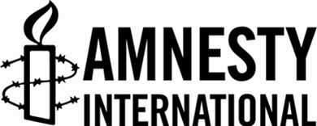 Amnesty International
“The Internet has paved the way for unprecedented numbers of people to exercise their rights online, crucially freedom of expression and assembly. The ability for individuals to publish information and content in real-time has created a new world of possibilities for human rights investigations globally. Today, we all have the potential to act as witnesses to human rights violations that once took place in the dark. Yet large shadows loom over the free and open Web. Governments are innovating and seeking to exploit new tools to tighten their control, with daunting implications for human rights. This new environment requires specialist skills to respond. When we challenge the laws and practices that allow governments to censor individuals online or unlawfully interfere with their privacy, it is vital that we understand the mechanics of the Internet itself — and integrate this understanding in our analysis of the problem and solutions.”
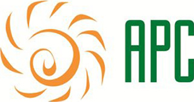 Association for Progressive Communications (APC)
“The vision of the Association for Progressive Communications is that all people have easy and affordable access to a free and open Internet to improve their lives and create a more just world. It is our mission to empower and support organisations, social movements, and individuals in and through the use of information and communication technologies. We help build strategic communities and initiatives that make meaningful contributions to equitable human development, social justice, participatory political processes, and environmental sustainability.”
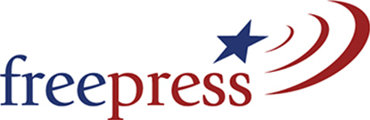 Free Press
“At Free Press, we believe that protecting everyone’s rights to connect and communicate is fundamental to advancing social change. We believe that people should have the opportunities to tell their own stories, hold leaders accountable, and participate in policy making. And we know that the freedom to access and share information is essential to this. In addition to maintaining open networks for Internet users, we also need to curb government surveillance and protect press freedom. Widespread spying has had a particular impact on journalists, especially those who cover national security issues. Surveillance, crackdowns on whistleblowers, and pressure to reveal confidential sources have made it difficult for many of these reporters to do their jobs.”
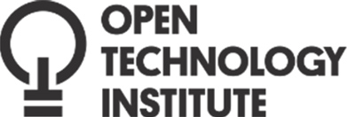 Open Technology Institute (OTI)
“At OTI, we are committed to freedom and social justice in the digital age. To achieve these goals, we engage in policy debates, build technology, and work with communities to understand needs, test tools, and build alternative models of infrastructure. So much of what impacts our online experience happens without us seeing it, making it easy to overlook. We need help figuring out how to make this information more available and more clear so that policy experts, advocates, industry professionals and everyday Internet users can understand what interconnection is, how it works, and how it affects the online experience.”reveal confidential sources have made it difficult for many of these reporters to do their jobs.”
Public Knowledge
“There is no doubt that public policy impacts people’s lives, and Public Knowledge is advocating for the public interest at a critical time when special interests are attempting to shape policy that benefits them at our cost or that overlooks an issue’s complexity. Indeed, in this interconnected world, the right policy outcome isn’t always immediately clear. Location tracking, for example, can impact people’s sense of privacy; and yet, when deployed in the right way, can lead to first responders swiftly locating someone calling 911 from a mobile device. Public Knowledge sifts through the research and makes sure consumers have a seat at the table when these issues are decided.”
Casting a Wide Net for Fellows
We were intentionally broad when defining what a Fellow may look like. Why? Our goal was to attract a diversity of applicants. We envisioned a cohort of data architects and women’s rights activists, of developers and designers. They would hail from a range of countries and various points in their careers, but share a common belief: the world can be made a better place by leveraging the open Internet.
We also wanted to attract candidates with marked ambition — the drive and ability to shape their own experiences. An ideal fellow would dream up and create projects at the intersection of the Internet and civil society. They would write code, develop apps, and pen blog posts without explicit direction. And they would sniff out conferences, communities, and workshops, unprompted.
Now, we had to find six Fellows who fit this mold.
Given we were operating in the program’s inaugural year, Ford and Mozilla did not anticipate an overwhelming interest. But we quickly learned technologists and activists around the world are eager to engage. Issues like net neutrality, privacy and security, and mass surveillance proved significant motivations to apply.
All said, we received 553 applications from 87 countries. The diversity of applications was heartening: The most represented countries were the U.S. (109 applications), Nigeria (62 applications), and India (56 applications).
We received applications in the following breakdown: Sub-Saharan Africa (28%), North America (22%), Asia (16%), Middle East and North Africa (15%), Europe (13%), and South America (6%).
We were pleased to see high interest from Sub-Saharan Africa, a region where the open Internet is perhaps most contested. Still, there were shortcomings. We received a dearth of interest from Oceania.
Selecting the Fellows
When the application window closed in December of 2014, we began a rigorous process of evaluating each potential Fellow.
Our review team was intentionally diverse: A collection of people across Mozilla with expertise in policy, community, and other realms. Each application went through five rounds of review (listed below), led by this team.
Round 1: Interest. Our open application — anyone could apply — encouraged candidates to share their passions. Those who expressed protecting the open Web as a primary interest made the first pass.
Round 2: Skill. Since Fellows are embedded within host organizations, getting the right skills match was a critical step. The six host organizations outlined projects they needed help on, and had ideas about the skills and personality fits for which they were looking. We used this as a guide to winnow the number of candidates down to 80.
Round 3: Fit. The host organizations looked over the list of 80 candidates and together chose 25 semi-finalists about whom they wanted to learn more. They chose these candidates based on potential for the applicant to contribute to their projects on a technical level, but also on shared values.
Round 4: Interviews. The first interview, with Mozilla, was an opportunity for us to hear more about the aspiring candidates’ interest in becoming an Open Web Fellow. The second interview, with both the host organization and Mozilla, was an opportunity for the host organization and candidate to learn about each other, and determine their levels of mutual interest.
“What we need in the human rights world is technology expertise. We need a lot more tech talent in the human rights movement.”
Round 5: Matching. After reviewing notes from both interviews and receiving input from the host organizations, Mozilla made offers. This was determined both by matching the needs of the host organizations with the skills the candidates brought, and by looking at the Fellows cohort as a cohesive unit that would work and grow together.
Our Fellows
We emerged from the selection process with a roster of capable Fellows, each possessing individual strengths.

Andrea Del Rio
Andrea is a software developer with a passion for closing the gender gap in STEM industries. She believes that combining technology and education can drive development and break the cycle of poverty, and as such, teaches programming to young women from vulnerable populations at Laboratoria in Lima, Peru. She is also the founder of coders.pe, an open online library of resources for learning code.
"Open web fellows are very talented and technical people, but also have a sense of social duty. That's what sets us apart."

Tennyson Holloway
Tennyson is a mathematics student and radio engineer at UC San Diego. He operates a Tor relay and has hosted a weekly Creative Commons-only music show. Tennyson is dedicated to building open-source technologies that educate, inspire, and liberate communities and users.
"We all share an understanding that an open internet is important to modern society, and it needs to be protected."
Paola Villareal
Paola is a self-taught systems programmer who, since 1998, has worked and played with all things “open” in governments, NGOs, and the private sector. She recently worked with the government of Mexico City on several civic innovation projects to build real, effective tools that defend democracy. She has also worked at Xamarin Inc. Her passion for open government and data, civic tech, and civil rights has fomented a curiosity to explore how and where technology, openness, and code can strengthen human rights.
“It’s about data and open source tools and advocacy. It’s about benefiting from the open Web.”
Gem Barrett
Gem is a technologist and speaker who specializes in the use of APIs in Web and iOS development. Her extensive experience in design and development allows her to combine creativity and programming with open-source tools to experiment with various frameworks and languages. She is always seeking opportunities to mentor other female coders, and completed a BSc in Computing during her Fellowship.
“We all come at the open Web from different angles. We’re passionate about one topic, but come at it from a range of backgrounds with a holistic approach.”
Drew Wilson
Drew is an organizer and software developer who’s passionate about using web technology to accelerate social change movements. With a background in computer science, he’s interested in using modern web technology as a tool to create a more participatory society. Previously, Drew was the technical lead at advocacy organizations focused on international refugee issues, animal protection, and transparency in government. In 2014, he was a Code for America Fellow, where he worked with the city of Denver, Colorado to improve civic engagement using open data.
“Fellows are interested in social change activities in the long-term.”
Tim Sammut
Tim is a network security engineer and advocate with a career encompassing support, deployment, architecture, consulting, and innovation roles. He currently focuses on the opportunities and issues created by the blend of people, human rights, and technology around the world. Tim left the corporate/private sector because he wanted to use his skills to contribute to the greater good. He started by helping journalists be more secure online, and came across the Fellowship during this work.
“It’s about making sure the Internet remains open and accessible for everyone. It’s also about expanding freedoms online to more people globally.”
Getting to Work
With a sound program infrastructure in place, and a cast of eager technologists queued up, Ford and Mozilla began what was, at its core, an experiment within the open Internet movement. This program is one of the first of its kind.
Ten months later, the results are heartening. Open Web Fellows have built tools and processes that empower journalists and democracy.
Below, a snapshot of Fellows’ accomplishments. It’s an inventory of what they built, why they built it, and what they have to say about it. (And in true open fashion, there’s also a wiki documenting everything shipped. Read the wiki »)
“Fellows didn’t just create solutions to problems. They also opened their host organizations’ eyes to new ways of approaching things.”
Andrea Del Rio // Association for Progressive Communications (APAC)
Making gender quality online a priority

Andrea Del Rio embedded at APC with the goal of expanding women’s rights and gender equality online, with focus on the global south. Andrea’s digital savvy allowed APC to advance this mission and present their work in a more dynamic and impactful way: She crafted an interactive platform for APC’s “Feminist Principles of the Internet,” a treatise bridging the gap between the feminist movement and the Internet rights movement. Andrea transformed the static document into an interactive community where activists can talk and share resources. When fully complete, the platform will live at http://feministinternet.net/.
“I had been playing for a great local team at Laboratoria. And as an Open Web Fellow, I had a unique chance to play for one of the best global teams out there.”
Andrea also reimagined APC’s Digital Security First-Aid Kit for Human Rights Defenders, a collection of tools and guidance for human rights workers who face hackers, surveillance, abuse, censorship, and other threats. Andrea built a new platform for the kit — one that’s fast, accessible, mobile-friendly, open source, and easily localized.
“I believe every Internet should know these tools and use them to protect privacy, fight censorship, and exercise the right to freedom on the Internet.”
In November 2015, Andrea led a gender equality session at MozFest titled “A Feminist Internet in 140 Characters.” The session brought together diverse makers, designers, and technologists who authored a list of open Web feminist principles.
“The feminist principles of the Internet should be relevant to anyone who loves the Internet and is interested in gender equality.”
During her tenure as a fellow, Andrea traveled to Malaysia, the Philippines, Mexico, the U.S., the UK, and South Africa. She also co-founded the NetPosi podcast, which explores digital rights and online activism.
Watch Andrea’s capstone remarks »
Tennyson Holloway // Public Knowledge
Upholding an Internet for the public, by the public
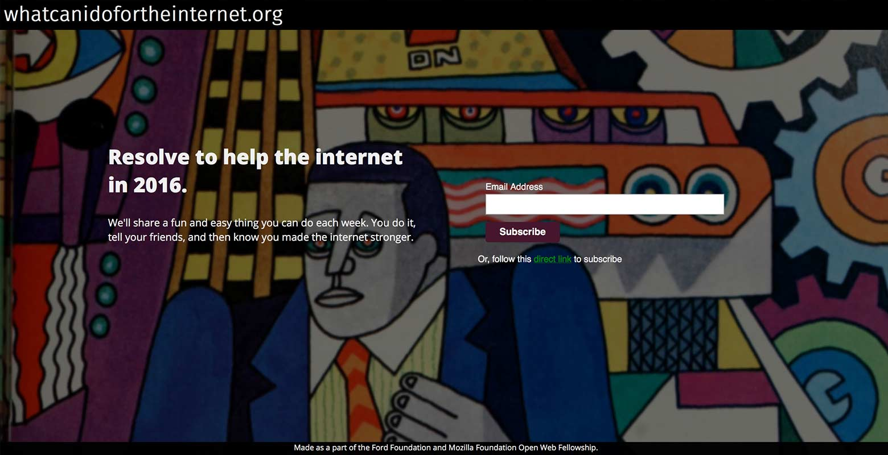Tennyson embedded at Public Knowledge to tackle issues at the intersection of public interest and technology. He functioned as a sorely-needed technologist among lawyers and policy experts, helping navigate the woolly world of net neutrality, telecom mergers, and consumer protections online. Tennyson attended congressional and FCC sessions; lent his expertise to software projects; and authored research on broadband privacy.
“I’m inspired by Wikipedia, Tor, and Creative Commons.”
Tennyson also showed a devotion to self-directed projects. He created the SMS Vote Updater, a tool for subscribing to and monitoring legislators’ voting. Users text their zip code to the service and quickly receive a list of relevant legislators. Users then subscribe to specific policymakers — and when those policymakers vote on a bill in Congress, users receive a notification detailing the vote and bill.
“I was really excited to build this. I like the idea of increasing access. You can keep an eye on your legislator.”
Tennyson also began work on whatcanidofortheinternet.org, a collection of resources and stories that detail how individuals can contribute to the Internet. The site motivates others to improve the Internet, and serves as a friendly gateway to the open Internet movement.
Alongside Fellows Andrea Del Rio and Drew Wilson, Tennyson produced the NetPosi podcast. The trio interviews technologists making a mark in the world of activism (or vice versa). Guests include Cory Doctorow and Wendy Seltzer.
“It’s a podcast about the intersection of activism and technology.”
Watch Tennyson’s capstone remarks »
Paola Villarreal // ACLU Massachusetts
Using data for a greater good
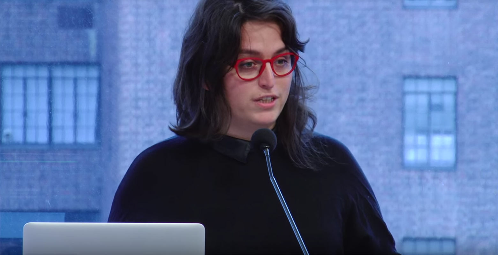Paola embedded at ACLU Massachusetts. Here, Paola brought a self-taught technologist’s savvy to the world of social justice and individual rights. She wrote code and analyzed gigabits of data to battle inequality.
“I am here because I was lucky to have open access to knowledge. [And] I think technology is the biggest enabler of human rights.”
Paola’s capstone project is Data for Justice, an ambitious initiative that connects activists, organizers, and journalists with data so they can catalyze change in their communities.
“It empowers activists and advocates to make data-driven decisions.”
Specifically, Paola’s project analyzes data from the Boston Police Department and several other sources, spotlighting discriminatory practices linked to stop-and-frisk and the war on drugs. Findings are then showcased using a data visualization framework, titled Augmented Narrative Toolkit, developed explicitly for this project. And as an open source undertaking, the Data for Justice project can be adapted to other cities around the world.
“This experience has shown me technology and data will be core parts of civil rights and civil liberty organizations.”
Paola also traveled extensively as an Open Web Fellow, plugging into pockets of the open Internet movement around the world. She attended and spoke at open source and open government gatherings in Mexico City, London, Hamburg, Harvard University, and beyond.
Watch Paola’s capstone remarks »
Gem Barrett // Open Technology Institute (OTI)
Making transparency a matter of course
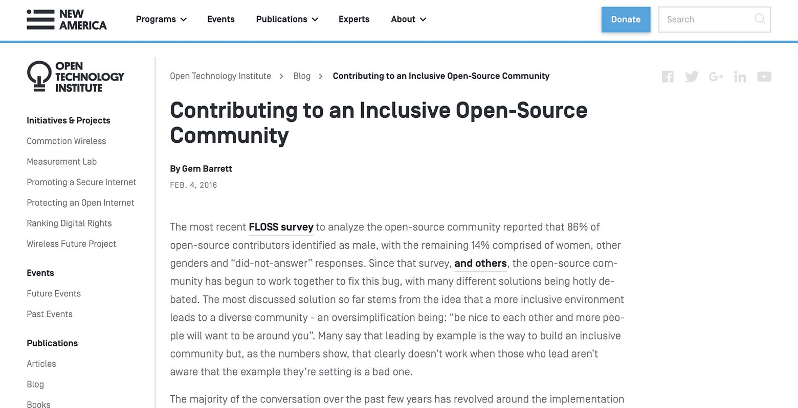Gem embedded with Open Technology Institute (OTI), helping OTI build out their transparency and open data initiatives.
“Most of the work I did was around empowering digital citizens.”
Gem worked on OTI’s Seattle Broadband Map, which allows Seattle Internet users to measure and understand connectivity in their neighborhoods. She created the Code of Conduct Builder, a tool that allows online community leaders to create inclusive spaces and build customized anti-harassment policies. Gem contributed to the Transparency Reporting Toolkit, as well, which allows organizations to standardize transparency reports.
Gem also committed to a range of satellite projects. She penned articles about making the open source ecosystem more inclusive (here and here), and planned events that explore the intersection of gaming and social justice. In April 2016, Gem was recognized with the “Powerful Women Programmers” Award from DCFemTech.
Watch Gem’s capstone remarks »
Drew Wilson // Free Press
Computer science can serve the public interest
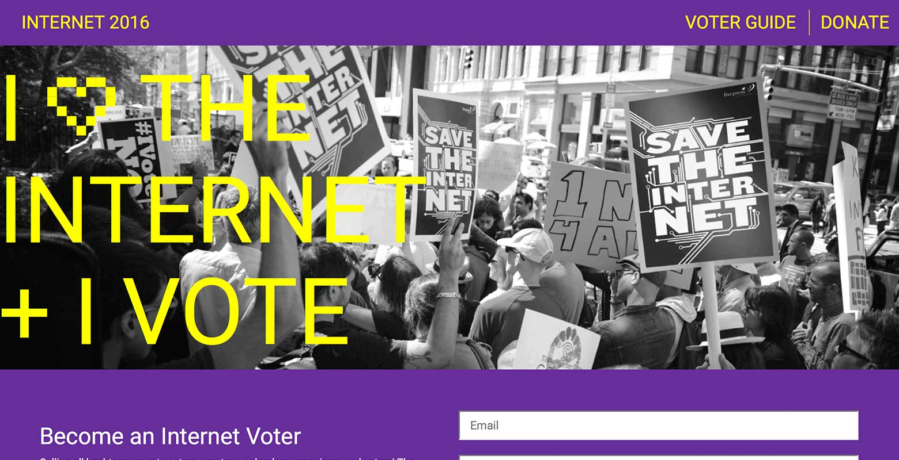Drew worked with Free Press, a nonprofit that advocates for a healthy and free fourth estate. Here, Drew helped shape Internet2016, an initiative that asks users to pledge support for freedom, access, privacy, and choice online. The approach is decidedly grassroots: Internet2016 also educates the public about political candidates’ stances on Internet issues. Drew lent both his tech and advocacy acumen, building the website and consulting on campaign content.
Drew has also tackled a number of personal projects. He co-hosts the NetPosi podcast alongside Fellows Andrea and Tennyson.
“NetPosi shares stories from people who do interesting work at the intersection of social change and technology.”
Drew curates Tools for Activism, a resource that lists digital tools for activists and technologists. It recently snagged front-page real estate on GitHub. Drew also built experimental web-tools-for-activism prototypes: a meme generator (its goal: “empower people to be more politically engaged online”), and Printernet, a web application that assists small NGOs with print mailings.
Watch Drew’s capstone remarks »
Tim Sammut // Amnesty International
Empowering activists with the Web
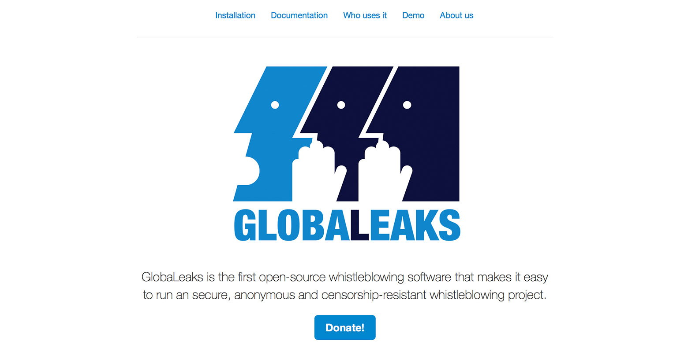Amnesty International stands up for human rights around the globe. As an Open Web Fellow, Tim furthered this mission in a 21st-century fashion. Tim helped Amnesty pilot GlobaLeaks, an open source platform for the safer submission of sensitive information on a range of issues.
“How can technology help the refugee crisis? How can it help with gender issues?”
Tim is also building the Secure Communications Framework, a reference model for human rights researchers and activists seeking the right tools and practices for sensitive work. It’s a matrix for identifying safer, more secure, and reliable channels for carrying out work in dangerous regions. The framework can help people maintain privacy and avoid arrest, detention, or worse.
“[It’s for] a researcher who may be an expert in their field, but is uncertain which digital tools and practices will enable their work without simultaneously undermining their safety.”
Lessons Learned

“How do you add a tech lens to social justice work?”
Year 1 of the Open Web Fellows program was both a leadership initiative and a functional beta — a chance to explore how the program works, and learn from each experience. Ultimately, we sought to apply the same approach our Fellows do in their work: we went out into the world; we listened; we tried things, sometimes succeeding and sometimes failing; and we learned. Then we started this process over again.
“We spent this year listening. And we know this is working, and we know there are pieces to change. We have a lot to look forward to in the new phase of the Fellowship.”
Achieving autonomy
Fellows are inherently rugged: they seek to work outside of traditional systems to achieve change. The program seeks out individualists who push against the system — but then we ask them to function within a bureaucratic structure. While the Fellowship program does grant a high level of autonomy, there are also several layers of structure. Fellows exists within a Fellowship program framework, and also within their host organization — and often within brick-and-mortar locations, too.
We need to work on balancing autonomy and structure in way that empowers Fellows and doesn’t restrict or confine them. We also understand that organizational change isn’t achieved by one outsider coming in. Therefore, we’re focusing on bringing together the network to support Fellows.
Analysis paralysis
As makers and doers, Fellows are also inherently eager. They want to code and create solutions, big or small, and be nimble — a virtue that sometimes clashes with host organizations’ more long-term, analytical approach.
Moving forward, we need to reconcile Fellows’ eager spirits with their organizations’ more measured approaches. Each party can move more toward the center to find a workable medium. We also want to encourage host organizations to adopt this maker mentality, and jump into rapidly searching for solutions.
Bring host organizations closer
Throughout Year 1 of the Fellowship, we worked to connect the Fellows through calls, events, and other channels. But another critical element is building strong bridges between the host organizations themselves. If these leading NGOs and civil society groups are able to work across organizations and borders, the open Internet movement will grow spectacularly. In the years ahead, we’ll invest in the Fellowship and host organizations in a way that builds a tight-knit tech for good community.
We’re also building a network that extends beyond host organizations. While the Fellows, Fellowship alumni, and host organizations are at the core of our work, we want to dream bigger and fuel a global movement.
Onboarding hacking
Fellows are makers. As such, it would have been beneficial to provide time during onboarding for Fellows to hack on and build something together. Giving them the opportunity to share their technological knowledge may have been a good way for them to forge and strengthen professional bonds. For example: In Year 1, three of the Fellows came together to launch the NetPosi podcast. If we intentionally bake in more collaborative projects like this, the opportunities are limitless.
Looking Ahead
The conclusion of our inaugural year, and the “graduation” of our Fellows, was marked with a capstone celebration at Ford Foundation headquarters in early May of 2016.
Here, our Fellows reflected on their months of work, and shared their next steps as Open Web Fellow alumni. Some will continue to hone and build the projects they began at the start of their Fellowship; others will pursue more formal educational training. All Fellows expressed a deepened interest in working toward the public good through technology.
Ford and Mozilla are looking forward, as well. The Open Web Fellows program is a multi-year initiative, tasked with empowering dozens of leaders who are capable of entering the Internet advocacy space to rally citizens, educate users, and mentor others.
In the program’s second year, we’ve laid out a series of goals to help our Fellows make an indelible mark:
Expanding our scope
Our second roster of host organizations is diverse: They range from civil rights groups in Europe to research organizations in East Africa. By embedding Fellows in both the global south and global north, we can create a network of leaders and spur change that is truly global in nature.
We also aim to tackle a larger diversity of issues in Year 2. The Internet is inexorably tied to so many social issues, from justice to civil rights to consumer protection. In Year 2, we believe the issues our Fellows tackle should be as diverse as the host organizations in which they embed.
Our host organizations and issues for the 2016/17 cohort are:
Centre for Intellectual Property and Information Technology Law (CIPIT), the Nairobi-based research and training center at the Strathmore Law School. CIPIT works with communities in extreme stances of censorship, and in 2016 will focus on Internet freedom, intellectual property, and election monitoring in East Africa. The CIPIT Fellow will develop tools that serve an immediate and critical need — like creating a more transparent Ugandan election — and help shape the next generation of Internet laws in Africa.
Citizen Lab, the Toronto-based interdisciplinary laboratory at the Munk School of Global Affairs, University of Toronto. Citizen Lab focuses on advanced research and development at the intersection of ICTs, human rights, and global security, providing impartial, evidence-based, and peer-reviewed research. Citizen Lab’s Fellow will apply technical skills to questions concerning technology and human rights, creating tools that both uphold online security and privacy and empower citizens.
ColorOfChange, the civil rights organization that works to strengthen the voice of Black America and create positive change around political and social issues that affect the Black community. ColorOfChange supports net neutrality and the reclassification of broadband as a public utility — hugely consequential issues in disenfranchised communities, as Black and brown Americans are least able to overcome the obstacles inherent in a closed Internet. ColorOfChange’s Fellow will ensure the ongoing net neutrality conversation includes a civil rights perspective, and will pioneer tools for rapid-response campaigning.
Data & Society, the New York City-based research institute exploring issues at the intersection of technology and society. Data & Society focuses on social, cultural, and ethical issues arising from data-centric technological development. Data & Society’s Fellow will work with activists and technologists across the network, engaging technical communities core to Data & Society’s mission.
Derechos Digitales, the Santiago-based organization that promotes human rights in digital environments. Derechos Digitales’ work focuses on the nuanced realities of Latin American countries, and brings these perspectives to discussions around issues like cybersecurity, freedom of expression, access to knowledge, and corporate transparency. The Derechos Digitales’ Fellow will provide technical advice, develop tech policy documents that can bridge the human rights and tech communities, and support capacity-building sessions with local civil society organizations.
European Digital Rights (EDRi), the association of 33 civil rights organizations from across Europe that promote, protect, and uphold civil and human rights in the digital environment in the European Union. Their four key priorities for 2016 are data protection and privacy, mass surveillance, copyright reform, and net neutrality. The EDRi Fellow will educate the general public and policymakers alike.
Freedom of the Press Foundation, the San Francisco-based nonprofit that supports and defends journalism dedicated to transparency and accountability. Freedom of the Press believes one of the most critical press freedom issues of the 21st Century is digital security, and works to ensure journalists can use technology to do their jobs safely and free from surveillance. The Freedom of the Press Fellow will use technical savvy to help journalists work safely and communicate securely.
Privacy International, the human rights watchdog devoted to privacy issues around the world. Privacy International advocates for strong privacy protection laws, investigates government surveillance, conducts research to enact policy change, and raises awareness amongst the public about technologies that place privacy at risk. The Privacy International Fellow will work with the organization’s in-house tech team to analyze surveillance documentation and data, identify and analyze new technologies, and help develop briefings and educational programming.
Supporting a network
We want the diversity of our Year 2 Fellows to match that of their host organizations. Ford and Mozilla invested in reaching technologists and activists around the globe — and as a result, we witnessed applications from nearly every continent. Our application pool for Year 2 of the Open Web Fellows program includes 36 candidates from Latin America; 163 from Africa; 40 from the Middle East and North Africa; 71 from Europe; 54 from Asia; and 3 from Oceania.
“There is a groundswell of demand for technologists.”
Year on Year applicants by continent
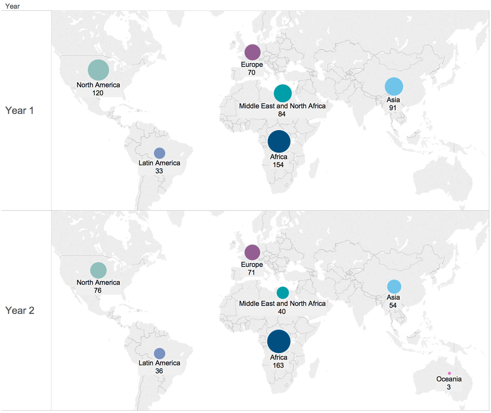Countries we received applications from
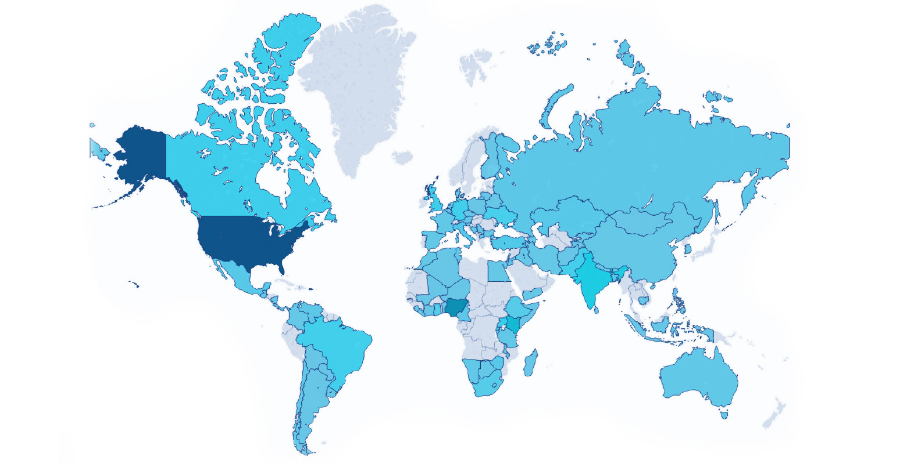Skills split by form input type
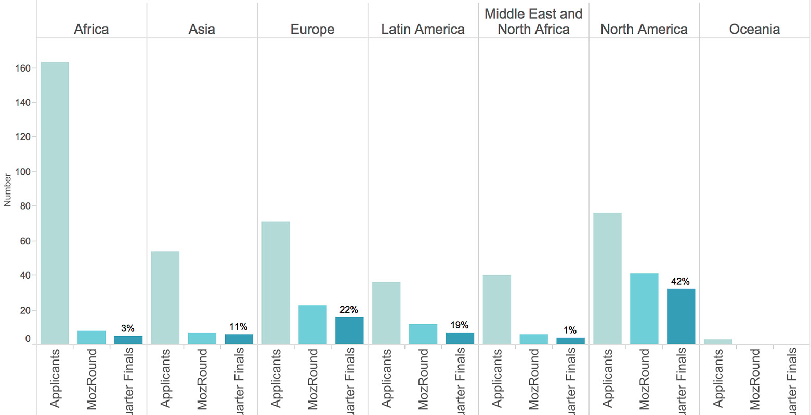Throughout the selection process, we’re also paying keen attention to various skills sets. Fellows don’t just write code — they position the open Internet as a resource worth fighting for. As such, we’re exploring candidates with experience in research, storytelling, community organizing, data visualization, graphic design, curriculum development, and more.
In Year 2, we will focus our face-to-face meetings on exploring how the Fellows can tackle the shared issues of the network of individuals and organizations defending the open Web. Whether this takes the form of collaborative software projects, skill sharing, trainings or other means, our next cohort will have dedicated time for collaboration.
Year 2 Fellows will comprise a cohort that’s well-rounded and well-equipped for the challenges ahead. And they will join our Year 1 Fellows as members of a distinguished network of young leaders shaping Internet policy today.
Doubling down
Mozilla’s partnership with Ford, and experience working with Fellows, has reaffirmed our commitment to cultivating the next generation of open Internet leaders. It has also fundamentally influenced our broader plans — leadership development and public education have emerged as key pillars in the Mozilla Foundation’s 2020 strategy.
In the coming years, Mozilla will continue to invest in advocacy campaigns and leadership pipelines that empower technologists of all stripes to make a positive impact on the open Internet.